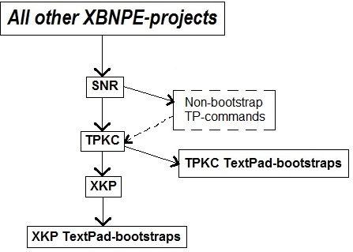

[BACK]
The most fundamental concept in XBN-PhraseExpress is "TextPad-bootstraps". Before almost anything in XBN-PhraseExpress can function, TextPad-bootstraps must be installed. TextPad-bootstraps are commands that are built into the TextPad application, such as
TextPad > Configure > Preferences > Keyboard > Categories > "Edit" > Commands > "EditCopy"
Only the XKP and TPKC projects have TextPad-bootstraps. While other projects require certain built-in TextPad commands, these are "non-bootstrap" (nbs) commands, and are installed in a different way.
Contents:
[GO] XBN-PhraseExpress project dependencies[GO] TextPad-bootstraps: Format and specifications (3 phrases: main, escaped, tp-key-press)[GO] Phrase and file locationsIn TextPad version 7.0.9, there are 332 built-in commands. 26 of them are TextPad-bootstraps (8%).
[top] TextPad-bootstraps: Phrase and file locationsAll TextPad-bootstraps, for both the XKP and TPKC projects are stored in a single directory: the root directory of your TPKC-user-directory.
{#insert zXPROOT_DIR_tpkcUsrCfgUserBase_M_tudn}tp_bootstraps_for_xkp_project.px.txt (tpfi--for tpkc-user-dir name="tp_frsh_instl", blank template)
tp_bootstraps_for_tpkc_project.px.txt (tpfi, template)tp_bootstraps_for_xkp_project_esc_tpk.px.txt (tpfi, template)
tp_bootstraps_for_tpkc_project_esc_tpk.px.txt (tpfi, template) XBNPE: Parent-folder >
XBN-PhraseExpress >
(go) XBNPE-TPKC: TextPad Built-in commands >
XBNPE-TPKC: User-specific phrases: [TPKC_USER_DIR_NAME]
TextPad-bootstrapsSplitting TextPad-bootstraps into these two files makes remote-builds possible.
[top] XBN-PhraseExpress project dependenciesThe most fundamental project in XBN-PhraseExpress is the
XBNPE-Key-presses (XKP) project
The only project that directly depends on it is the
TextPad built-in command (TPKC) project
All other projects in XBN-PhraseExpress depend (directly) on TPKC.
These two foundational projects depend on TextPad-bootstraps. There are TextPad-bootstraps exclusive to the XKP-project, and some exclusive to TPKC. These projects cannot be installed until their tp-bootstraps are installed first. TextPad-bootstraps are built-in TextPad commands that must be manually installed by you.
No other XBN-PhraseExpress projects have TextPad-bootstraps. Other projects, such as
XBNPE-Search and Replace (SNR)
also require certain built-in TextPad commands to exist, but they are considered "non-bootstrap" (nbs) commands and are configured in a different way: in your TPKC user-specific command-configuration.
(The SNR-project is the only project directly dependent on TPKC. All other XBN-PhraseExpress projects depend on SNR.)

[top] TextPad-bootstraps: Utilitiesxhtk)Follow all instructions carefully.
testtpbsxkp: Verifies all XKP-required tp-bootstraps.testtpbstpkc: Verifies all TPKC-required tp-bootstraps.testtpbsxkptpkc: Calls testtpbsxkp and then testtpkpc.xhtb)All these utilities require the name of the main tp-bootstrap phrase to be in a variable named
zvBTSTRP_PHRS_NM
zTPBtstrpEscKC_M_bspm: Gets the escaped key-command, after unescaping itzTPBtstrpEscPhrsNm_M_bspm: Gets the name of the phrase containing the escaped key-command.zTPBtstrpTPKeys_M_bspm: Gets the value of the TextPad key-press.zTPBtstrpTPKeysPhrsNm_M_bspm: Gets the name of the phrase containing the TextPad key-press.tpbsutildemo
{#SETPHRASE -description zvBTSTRP_PHRS_NM -content zTPCopy -autotext zvBTSTRP_PHRS_NM -folder ctvv_folder}
{#insert zTPBtstrpEscPhrsNm_M_bspm}:{#ENTER}{#TAB}
{#insert zTPBtstrpEscKC_M_bspm}{#ENTER}{#BKSP}
{#insert zTPBtstrpTPKeysPhrsNm_M_bspm}:{#ENTER}{#TAB}
{#insert zTPBtstrpTPKeys_M_bspm}{#ENTER}
Output:
zTPCopyEsc:
{#CTRL -chars c}{#insert zTSlp}{#sleep 10}
zTPCopyTPKeys:
Ctrl+C
[top] TextPad-bootstraps: TerminologyA "TextPad-bootstrap" is a built-in TextPad command that is critical to either the XKP or TPKC-project. The key-command assigned to a TextPad-bootstrap is called a "bootstrap key-command". Any other key-commands assigned to a tp-bootstrap (or any key-command assigned to any other built-in TextPad command), are each called a "Non-BootStrap key-command" or "Non-BootStrap kc", or "nbs-kc".
A "Non-BootStrap command", or "nbs-command", is simply a command that is not a tp-bootstrap--whether or not it has a key-commands assigned to it. An "nbs-phrase" is a phrase that triggers a non-bootstrap command.
The "primary key-command" for a TextPad command is:
[top] For XBNPE-developers only: Promoting an nbs-command to a tp-bootstrap(See: locations)
{#insert zXPROOT_DIR_tpkc}/textpad__tpkc/for_v_7_0_9/user_config/
"Esc" and "TPKeys")BookmarkPrev zTPBookmarkGTPrev Srchmkprv __ES__ 100 {#insert zDOWN3}
BookmarkPrev zTPBookmarkGTPrev Srchmkprv yes 100 {#insert zDOWN3}
zTpkcSrchmkprvIsBtstrp_yes
{#insert zXPROOT_DIR_AG_tpkc}\cmd_cfg_global__bldprc06\search\search_BookmarkPrev.px.txt
search_BookmarkPrev.px.txt
zTestAllXKPTextPadBootstraps
zTestAllTpkcTextPadBootstraps
{#insert zXPROOT_DIR_tpkc}/textpad__tpkc/for_v_7_0_9/user_config/tp_ALL_cmds_pcddmenu.txt
"[BS]" to its ddmenu-entry.sub_build_proc.html#02.[top] Commands in the "Characters" category may not be TextPad-bootstrapsThe "Characters" category is the only one in which commands do not have names. Instead, the "name" of each command is the character itself. This is unacceptable to the TPKC-project. The TPKC-build process (sub-build-proc-11) therefore changes each to a specific name**. For example, 'Ã' is changed to "Char14AUpperTilde". Since this translation does not occur until after the TPKC-project is installed and built (meaning all build processes from 02 through 14 are successfully executed), no commands in this category may not be used as TextPad-bootstraps, until after all TPKC build processes have been successfully executed.
This restriction only applies to the XKP and TPKC projects.
**(see the bottom of section two, under TPKC-build: Before everything else: Manually creating the raw-global-configuration, in the TPKC-build-process technical documentation)